Asakusa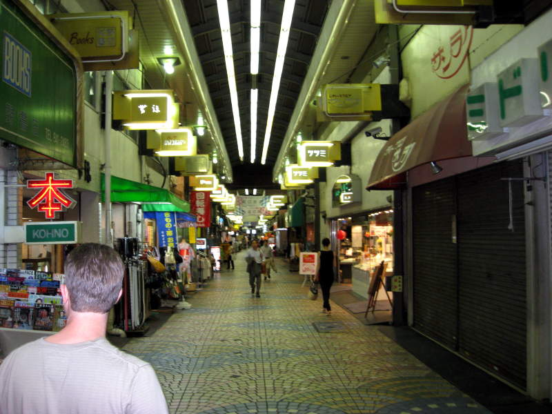
We arrive at the touristy stop in Tokyo called Asakusa.
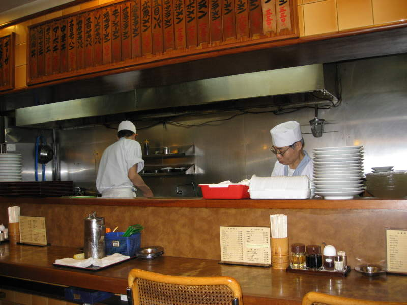
When
we found this ramen shop, I was rather hungry. We couldn't really
translate the menus very well. We just ordered some things anyway
and hoped for the best.
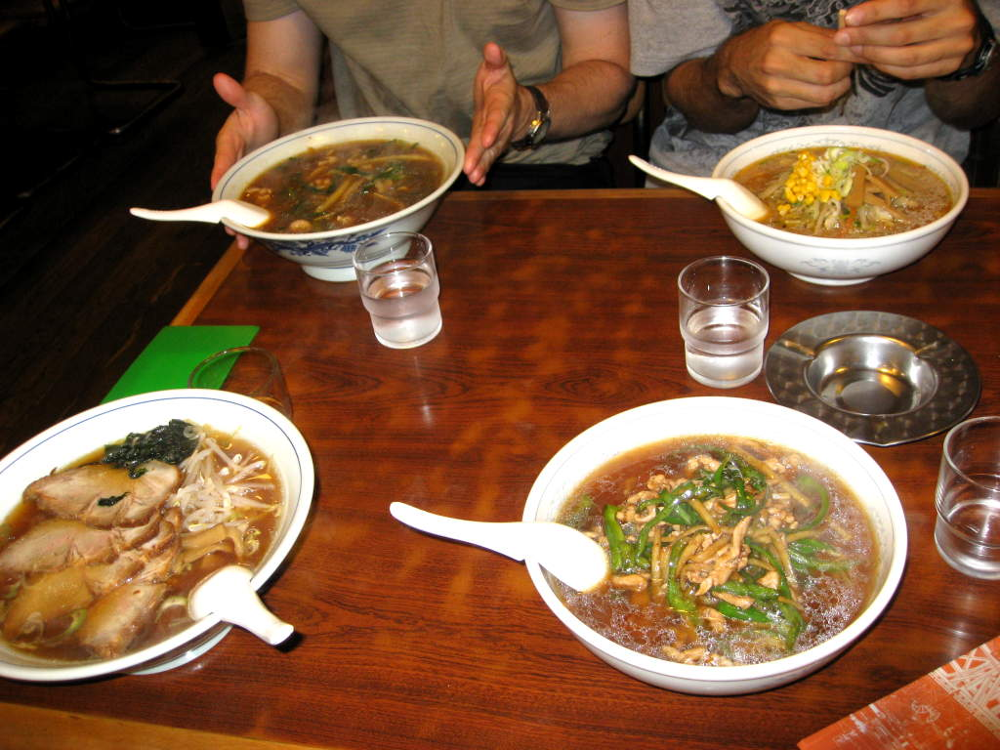
This shows we made out fairly well. The noodle dishes were absolutely delicious.
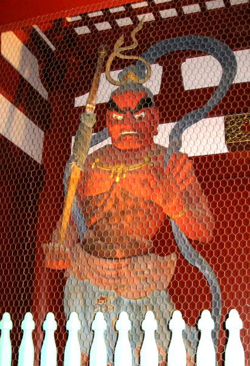
Unfortunately, some of the more dangerous-looking statues had to be kept in a cage.
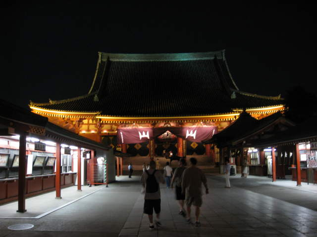
Scenic temples guide our path.
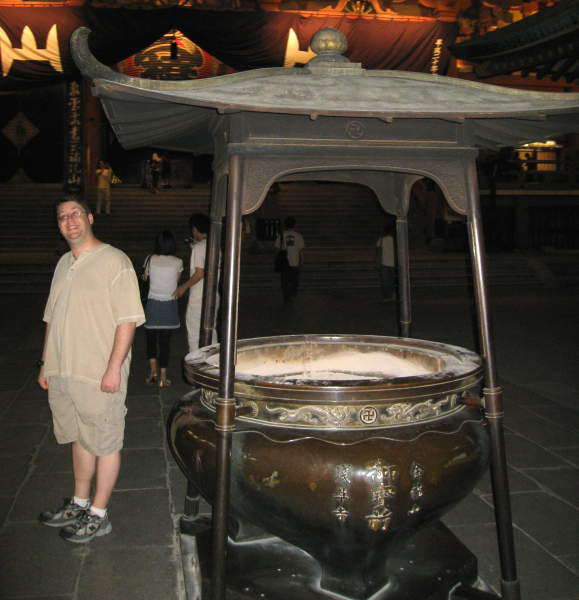
Here's my friend Miller next to a pot of mist.
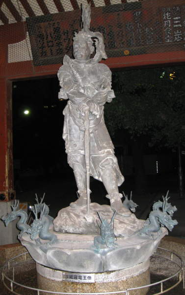
The stone warrior stands bravely over much tinier stone dragons.
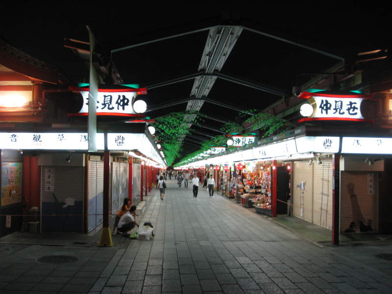
Paths
in Asakusa were lined with little shops. Friends grew impatient
while I spent 15 minutes waiting to buy five postcards.
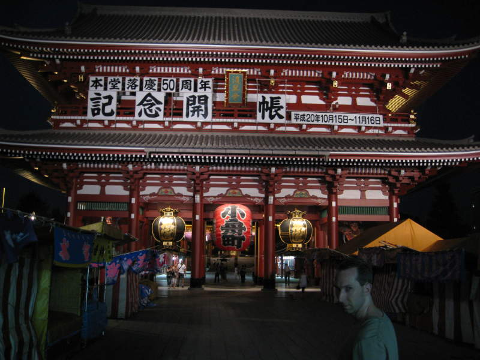
Two-level structure with the typical oriental-style roofs.
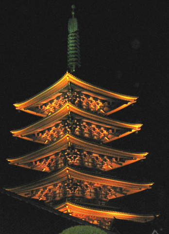
Often I notice the camera not doing justice to how impressive something looks in person. This was one such instance.
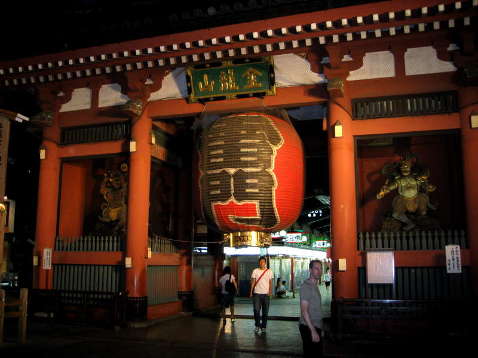
Another bright red gateway. This portal was actually high enough for me not to hit my head.
Back